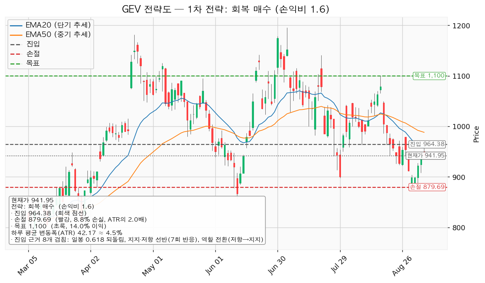
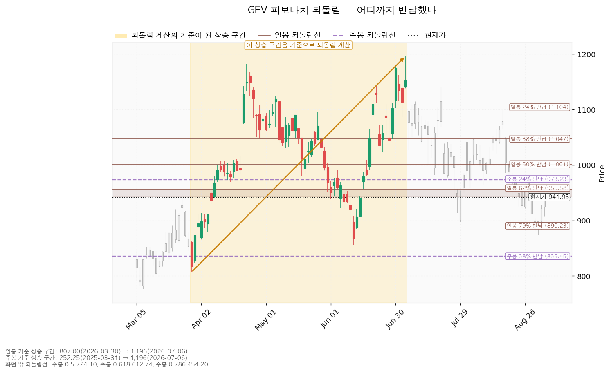
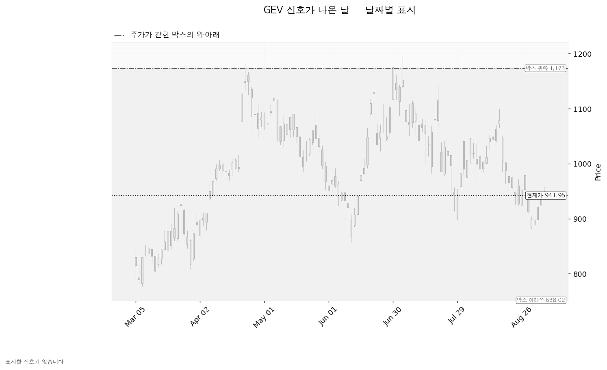
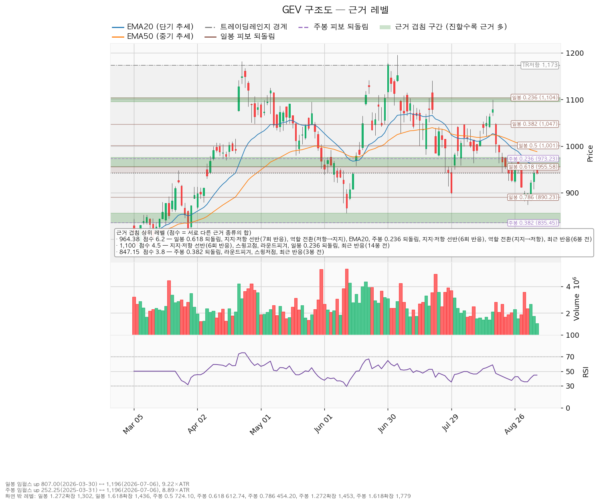

GE Vernova(GEV)는 GE에서 분리된 미국 전력 설비 회사로, 가스·풍력 발전 터빈과 송배전 전력망 장비를 만들고 유지보수 서비스를 제공합니다.
| 구분 | 가격 | 어떻게 판정하는가 | 현재 상태 | 현재가 대비 |
|---|---|---|---|---|
| 회복선 (진입 조건) | 964.38달러 | 일봉 종가로 회복한 뒤 되돌림에서 지지되는지까지 확인 | 회복 대기 | +2.38% |
| 집행 손절 | 879.69달러 | 저가가 닿으면 청산 — 진입한 경우에만 유효, 미진입 시 무의미 | 미진입 | -6.61% |
| 관망 종료 기준 | 890.23달러 또는 2026-10-28 실적 | 일봉 종가로 890.23달러를 잃으면 회복 시나리오를 접음 | 유지 중 | -5.49% |
| 확인선 (상승 확정) | 1,099.75달러 | 일봉 종가 돌파 후 되돌림 지지 확인 | 미돌파 | +16.75% |
| 폐기선 (구조) | 638.02달러 | 이탈 후 3거래일 내 회복 실패(또는 그 전에 595.85달러 아래 종가 마감) + 반등에서 저항으로 확인 — 하루 평균 변동폭의 7.21배 거리라 실무상 작동하지 않습니다 | 유지 중 | -32.27% |
폐기선이 이렇게 멀리 있는 이유는 엔진이 고른 횡보 박스가 638.02~1,173.30달러로 하루 평균 변동폭의 12.69배에 달할 만큼 넓기 때문입니다. -32% 빠지는 동안 계속 기다리라는 것은 지침이 되지 못하므로, 진입하지 않은 사람이 볼 선은 세 번째 줄입니다. 박스 상단 1,173.30달러는 확인선 위의 맥락으로만 씁니다.
과거에 발행한 GEV 리포트가 없어 이번이 첫 리포트입니다. 직전 대비 비교 절은 만들지 않았습니다.
| 항목 | 값 | 해석 |
|---|---|---|
| 현재가 | 941.95달러 | 20일·50일 평균선 모두 아래 |
| 20일 평균선(EMA20) / 50일 평균선(EMA50) | 958.41 / 988.26달러 | 단기선이 중기선 아래 — 최근 흐름이 중기 흐름보다 약하다는 뜻입니다 |
| RSI(14) | 44.6 | 최근 14일간 오른 폭과 내린 폭의 비율을 0~100으로 나타낸 값입니다. 중립(50) 아래이나 침체 구간(30)은 아님 |
| 하루 평균 변동폭(ATR) | 42.17달러 (주가의 4.48%) | 8% 기준 아래 — 손절 폭을 잡기 어려운 종목은 아님 |
| 횡보 박스 | 638.02~1,173.30달러 (180일봉 기준, 조회 613일봉) | 폭이 하루 변동폭의 12.69배 |
| 박스 안쪽 판정 | 중립 | 저점은 절상 중이나 상승봉/하락봉 거래량비가 1.01로 사실상 균형 |
| 직전 구간 | 315.16~691.48달러에서 위로 올라와 이 박스로 진입 | 재축적인지 분산인지 아직 갈리지 않은 자리 |
| 신호(속임수 하락·상승 이탈 등) | 없음 | 판단 근거로 쓸 신호일이 없습니다 |
| 국면 후보 | 하락 국면 | 하락 추세 + 단기선이 중기선 아래 + 평균선 기울기가 아래로 |
박스 안쪽에서 관측된 것은 세 가지입니다. 하단 지지 테스트는 2025-12-17(저가 613.09달러, 거래량 평균의 1.0배)과 2026-02-04(저가 708.75달러, 평균의 1.42배) 두 번뿐이어서 "테스트마다 매도 거래량이 줄어드는지"는 두 점으로 추세를 낼 수 없어 산출되지 않았습니다. 저점은 절상 중이고, 상승봉 대 하락봉 거래량비는 1.01로 사는 쪽과 파는 쪽이 거의 같습니다. 즉 매집이라고 부를 근거도, 분산이라고 부를 근거도 아직 부족합니다.
964.38달러를 일봉 종가로 회복하고 되돌림에서 지켜진 뒤, 1,099.75달러를 종가로 넘기는 경로입니다. 구조로 보면 하단 지지 확인 → 힘의 증거 → 되돌림 지지 → 상승 국면 순서입니다. 행동은 964.38달러 회복·지지 확인 후 진입, 1,099.75달러 종가 돌파 시에는 이 포지션의 연장이 아니라 새 셋업으로 다시 잡습니다.
638.02달러를 지키면서 1,099.75달러 아래에서 박스가 이어지는 경로입니다. 구조가 깨진 것이 아니라 매물을 소화하는 데 시간이 걸리는 국면이며, 부정적 신호가 아닙니다. 신규 진입은 보류하고 아래 세 가지를 추적합니다.
| 추적 항목 | 현재 관측 |
|---|---|
| 지지 테스트마다 매도 거래량이 줄어드는지 | 테스트가 2회뿐이라 아직 추세 판정 불가 |
| 저점이 절상되는지 | 절상 중 |
| 올라갈 때 거래량이 실리는지 | 상승봉/하락봉 거래량비 1.01 — 아직 한쪽으로 기울지 않음 |
이 셋 중 첫 번째와 세 번째가 개선되면 ①로, 저점 절상이 깨지면 ③으로 기웁니다.
638.02달러를 이탈한 뒤 3거래일 안에 종가로 회복하지 못하거나, 그 전에 595.85달러 아래로 종가 마감하고, 이후 반등에서 638.02달러가 저항으로 확인되는 경로입니다. 이때는 매집이 아니라 재분산이었다는 뜻이고 추가 저점 갱신 가능성이 열립니다. 포지션을 정리하고 새 매도 절정과 새 박스가 만들어질 때까지 관망합니다. 다만 위에 적었듯 이 선은 현재가에서 -32.27% 떨어져 있어 실무적으로는 작동하지 않습니다.
이번 분석에서 산출된 셋업은 회복 매수 하나입니다. 하락·중립 국면이므로 되돌림 저가매수는 산출되지 않으며, 개별 종목에 매도 셋업은 제시하지 않습니다. 지지 확인 매수도 나오지 않았는데, 박스 안쪽 판정이 매집 우위가 아니라 중립이기 때문입니다.
| 항목 | 값 |
|---|---|
| 이름 / 방향 | 회복 매수 · 롱 |
| 구조 증명도 | 회복 확인형 — 저항을 종가로 되찾은 뒤에만 진입. 진입가는 불리해지지만 구조가 먼저 증명됩니다 |
| 엣지의 종류 | 모멘텀 |
| 전제 | 저항을 종가로 되찾으면 그 방향이 이어진다 |
| 성격 | 자주 틀리고 소수가 크게 맞는 유형입니다. 승률을 기대하는 셋업이 아닙니다 (이 유형의 일반적 성격이며, 이 엔진에서 측정한 값이 아닙니다) |
| 진입 | 964.38달러 (현재가 +2.38%, 하루 변동폭의 0.53배 위) |
| 손절 | 879.69달러 — 겹침 구간(890.23~900.00달러) 바로 아래 |
| 손절 폭 | 진입가 대비 -8.78%, 하루 평균 변동폭의 2.01배 |
| 목표 | 1,099.75달러 (진입 대비 +14.04%) |
| 손익비 | 1:1.60 (손절 2.01 ATR 기준) |
| 진입 근거 겹침 | 8개 · 6.2점 — 일봉 0.618 되돌림, 지지·저항 선반(7회 반응), 역할 전환(저항→지지), EMA20, 주봉 0.236 되돌림, 지지·저항 선반(6회 반응), 역할 전환(지지→저항), 최근 반응(6봉 전). 구간 955.58~975.76달러 |
| 목표 근거 겹침 | 5개 · 4.5점 — 지지·저항 선반(6회 반응), 스윙고점, 라운드피겨, 일봉 0.236 되돌림, 최근 반응(14봉 전). 구간 1,095.18~1,104.15달러 |
| 현재가 추격 | 해당 없음 — 진입 조건이 현재가 위쪽 종가 회복이므로 추격 문제가 생기지 않습니다 |

산출된 셋업이 하나뿐이므로 비교 대상은 없습니다. 선정 근거는 손익비 1.60 × 구조 증명도(회복 확인형) × 근거 겹침 6.2점입니다. 손익비만 보고 고른 값이 아니며, 이 셋업의 장점은 손익비 크기가 아니라 진입 전에 구조가 먼저 증명된다는 점에 있습니다.
손익비를 좋게 보이려고 손절을 좁힌 값이 아니라는 점도 밝혀 둡니다. 손절 879.69달러는 아래쪽 겹침 구간(890.23~900.00달러) 바깥에 놓인 자리이고 폭이 하루 변동폭의 2.01배로, 엔진 기본 버퍼(0.5~0.7배)보다 훨씬 넓습니다. 즉 여기서 나온 1.60은 이미 구조적 손절을 반영한 손익비이며, 별도의 "구조적 손절 기준 손익비"가 따로 산출되지 않은 것도 그 때문입니다. 손절을 조여서 만든 매력이 아닙니다.
집행 정책은 고정입니다. 1,099.75달러에서 전량 청산하고 트레일링은 걸지 않습니다. 진입~목표 구간은 하루 변동폭의 3.21배로 폭 자체는 있으나, 정책상 다단 청산을 쓰지 않습니다. 1,099.75달러를 종가로 넘기면 그 위 구간은 이 포지션의 연장이 아니라 새 셋업으로 다시 잡습니다.
엔진은 참고용으로 분할안(1차 989.47달러에서 50% 익절 → 잔여 손절을 진입가 964.38달러로 이동 → 2차 1,099.75달러)도 함께 냈습니다. 그러나 이 분할을 쓰면 안 됩니다. 1차 목표 989.47달러의 손익비가 0.30에 불과해 전 구간 손익비가 0.95로 1 아래로 내려가고, 1차 체결 후 본전 스탑에 걸릴 경우의 하한 손익비는 0.15까지 떨어집니다. 이익을 반 잘라내는 대가로 손익비를 1 아래로 떨어뜨리는 거래가 되므로, 이 리포트의 계획은 단일 청산 하나입니다.
한 번의 매매에서 계좌의 1%를 잃는 것을 한도로 하면, 손절 폭 -8.78%가 정하는 포지션 크기는 계좌의 11.4%입니다. 한 종목 상한 13% 안쪽이므로 제한은 걸리지 않습니다.
| 단계 | 조건 | 의미 | 행동 |
|---|---|---|---|
| ① 관찰 | 일봉 종가가 964.38달러 아래로 마감 | 구조 이탈의 시작일 뿐입니다. 되돌아 올라오면 오히려 속임수 하락(spring)일 수 있어 아직 무효가 아닙니다 | 신규 진입만 중단. 집행 손절은 그대로 둡니다 |
| ② 경고 | 이탈 후 3거래일 안에 964.38달러를 종가로 회복하지 못함, 또는 그 전에 일봉 종가가 922.21달러 아래로 마감(하루 평균 변동폭 1배만큼 더 밀림) — 둘 중 먼저 오는 쪽 | 저항 회복 실패 가능성이 우세해집니다 | 잔여 비중 축소. 반등이 나오면 이 가격에서의 반응을 확인합니다 |
| ③ 무효 | 반등이 964.38달러에서 막히고 그 아래로 되밀림(지지가 저항으로 전환) | 구조 해석이 틀린 것으로 확정 | 포지션 정리 후 새 구조가 만들어질 때까지 관망 |
집행 손절 879.69달러는 이 3단계 판정과 무관하게 별도로 작동합니다. 그리고 장중에 잠깐 964.38달러를 내주는 움직임은 어느 단계에도 해당하지 않습니다 — 판정은 전부 일봉 종가 기준입니다.
폐기선 638.02달러가 현재가에서 하루 평균 변동폭의 7.21배나 떨어져 있어 실무상 무효화 기준으로 쓸 수 없습니다. 대신 2026-10-28 실적에 다음 조건을 겁니다.
일봉 되돌림은 807.00달러(2026-03-30) → 1,195.94달러(2026-07-06) 상승 구간을 기준으로 계산됩니다. 이 구간은 하루 변동폭의 9.22배 길이로 충분히 유효합니다.
| 되돌림 | 가격 | 현재 위치 |
|---|---|---|
| 24% 반납 | 1,104.15달러 | 확인선 근처 |
| 38% 반납 | 1,047.36달러 | — |
| 50% 반납 | 1,001.47달러 | — |
| 62% 반납 | 955.58달러 | 회복선 구간의 아래쪽 경계 |
| 79% 반납 | 890.23달러 | 관망 종료 기준 |
현재가 941.95달러는 62%와 79% 반납 사이에 있습니다. 62~65% 구간(943.13~955.58달러) 바로 아래에 있다는 뜻이며, 이 구간을 종가로 되찾는 것이 곧 회복선 조건입니다. 반대로 79% 반납선 890.23달러를 종가로 잃으면 이 상승 구간을 사실상 전부 반납한 것이 되어 회복 시나리오를 접습니다.
주봉 되돌림은 252.25달러(2025-03-31) → 1,195.94달러(2026-07-06) 기준이며, 24% 반납선이 973.23달러로 회복선 구간 안에 들어옵니다. 그 아래 주봉 38% 반납선은 835.45달러로 상당히 멉니다.

속임수 하락(spring), 상단 속임수 돌파(upthrust), 힘의 증거(SOS), 약함의 증거(SOW) 중 어느 것도 산출되지 않았습니다. 신호가 없다는 것은 좋다·나쁘다의 문제가 아니라, 날짜로 짚을 수 있는 매수·매도 근거가 현재 없다는 뜻입니다. 이 리포트가 진입 조건을 신호가 아니라 964.38달러 종가 회복이라는 가격 조건으로 건 이유가 여기에 있습니다.

| 가격대 | 겹침 점수 | 근거 | 역할 |
|---|---|---|---|
| 955.58~975.76달러 (964.38) | 6.2 | 일봉 0.618 되돌림, 선반(7회 반응), 역할 전환(저항→지지), EMA20, 주봉 0.236 되돌림, 선반(6회 반응), 역할 전환(지지→저항), 최근 반응(6봉 전) | 회복선 · 진입 |
| 1,095.18~1,104.15달러 (1,099.75) | 4.5 | 선반(6회 반응), 스윙고점, 라운드피겨, 일봉 0.236 되돌림, 최근 반응(14봉 전) | 확인선 · 목표 |
| 835.45~856.01달러 (847.15) | 3.8 | 주봉 0.382 되돌림, 라운드피겨, 스윙저점, 최근 반응(3봉 전) | 손절 아래 다음 지지 |
| 890.23~900.00달러 (895.97) | 3.3 | 일봉 0.786 되돌림, 스윙저점, 라운드피겨, 최근 반응(3봉 전) | 관망 종료 기준 · 손절의 근거 |
| 980.14~1,000.00달러 (989.47) | 3.3 | 스윙저점, EMA50, 라운드피겨, 최근 반응(6봉 전) | 회복선 위 첫 저항 |
| 1,028.00~1,047.50달러 (1,042.45) | 2.7 | 스윙저점, 스윙고점, 일봉 0.382 되돌림, 최근 반응(23봉 전) | 중간 저항 |
| 620.55~638.02달러 (626.37) | 3.4 | 선반(8회 반응), 역할 전환(저항→지지), 박스 하단 | 폐기선 |
회복선 구간 964.38달러가 특히 두꺼운 이유는 역할 전환이 두 방향으로 겹쳐 있기 때문입니다. 955.96달러 선반은 저항이었다가 지지로 바뀐 자리(7회 반응, 가장 최근 반응이 2026-09-04)이고, 975.76달러 선반은 반대로 지지였다가 저항으로 바뀐 자리(6회 반응, 6봉 전)입니다. 계산으로 유도된 선(EMA20·피보나치)과 실제로 가격이 여러 번 반응한 선반이 같은 자리에 모여 있어, 이 구간을 종가로 되찾는 것과 못 되찾는 것의 의미가 크게 다릅니다.
한편 손절 879.69달러 바로 위의 890.23~900.00달러 구간은 3봉 전에 실제로 반응이 나온 자리입니다. 손절을 이 구간 안이 아니라 아래에 둔 것은 그래서입니다.

PER은 주가를 주당순이익으로 나눈 배수이고, EPS는 주당순이익입니다. 후행은 이미 발표된 지난 1년 실적 기준, 선행은 앞으로 1년 추정치 기준입니다.
| 항목 | 값 |
|---|---|
| 후행 PER | 27.03배 (후행 EPS 34.85달러) |
| 선행 PER | 37.27배 (선행 EPS 25.28달러) |
| 올해(0년) EPS 컨센서스 | 30.74달러 (범위 26.83~33.23), 성장률 +73.8% |
| 내년(+1년) EPS 컨센서스 | 24.80달러 (범위 17.16~29.49), 성장률 -19.3% |
여기가 이 종목의 핵심입니다. 후행 27.03배만 보면 싸 보이지만 선행은 37.27배로 오히려 더 높습니다. 보통은 이익이 늘어 선행 배수가 낮아지는데, GEV는 반대입니다. 이유는 명확합니다 — 컨센서스가 내년 주당순이익을 올해 대비 -19.3% 감소로 잡고 있기 때문입니다. 따라서 "후행 27배니까 저렴하다"는 판정은 성립하지 않습니다.
한 가지 더 밝혀 둘 것이 있습니다. 후행 EPS 34.85달러가 올해 컨센서스 평균 30.74달러보다 높습니다. 후행 배수가 낮게 보이는 것은 후행 이익이 추정 기준보다 크기 때문이며, 그 격차의 원인(일회성 항목 등)까지는 조회된 자료로 확정할 수 없습니다. 이 부분은 추정하지 않고 사실만 적습니다.
| 항목 | 값 | 현재가 대비 |
|---|---|---|
| 평균 목표주가 | 1,236.43달러 | +31.26% |
| 최고 | 1,450.00달러 | +53.94% |
| 최저 | 940.00달러 | -0.21% |
| 애널리스트 수 / 등급 | 33명 / 매수 | — |
현재가 941.95달러는 33명 중 가장 낮은 목표주가 940.00달러보다 겨우 0.21% 위에 있습니다. 전원의 목표 아래로 내려간 것은 아니지만, 사실상 컨센서스 분포의 바닥에 붙어 있는 상태입니다. 강세 의견의 평균과 시장 가격의 거리가 이만큼 벌어져 있다는 사실 자체를 근거로 삼아서는 안 됩니다.
평균 목표주가 1,236.43달러를 선행 EPS 25.28달러로 나누면 내재 배수가 48.92배입니다. 현재 선행 배수는 37.27배이므로, +31.26%의 상승 여력은 전액 배수 확장에서 나옵니다. 같은 (감소하는) 이익 추정치를 놓고 배수만 48.92배까지 올려 잡은 목표이며, 이익 증가에서 오는 몫은 0입니다. 컨센서스를 근거로 이 종목을 사겠다면, 사는 것은 실적이 아니라 재평가입니다.
| 구분 | 90일 전 | 현재 | 변화 |
|---|---|---|---|
| 올해(0년) EPS 컨센서스 | 31.06달러 | 30.74달러 | -1.0% |
| 내년(+1년) EPS 컨센서스 | 24.26달러 | 24.80달러 | +2.2% |
방향이 엇갈립니다. 올해 추정치는 소폭 내려왔지만 내년 추정치는 오히려 +2.2% 올라왔습니다. 추정치가 함께 무너지며 가격이 빠진 경우가 아니므로, 이번 하락은 주로 배수가 줄어든 결과로 보는 것이 맞습니다. "주도주 지위가 후퇴했다"고 단정할 근거는 현재 자료에 없습니다.
다만 가격 기준으로는 지금 주도주가 아닙니다. EMA20·EMA50 아래에 있고 역배열이며 매수 신호도 없습니다. 정리하면 — 사업 쪽에서 무너진 증거는 없지만, 가격 쪽에서 주도권을 되찾은 증거도 없습니다. 그래서 결론이 매수가 아니라 조건부 대기입니다.
영업현금흐름 141.4억달러, 잉여현금흐름 157.2억달러로 둘 다 흑자입니다. 영업 단계에서 현금이 나가는 상태가 아니므로 현금흐름 적자 문제는 존재하지 않습니다. 설비투자는 12.77억달러로 직전 8.83억달러 대비 +44.6% 늘었으나, 영업현금흐름 규모에 비하면 작은 금액입니다.
컨센서스 목표주가는 12개월 관점이고 이 리포트의 셋업은 수 주 관점입니다. 둘의 결론이 갈려도 모순이 아닙니다. 이 리포트의 답은 컨센서스가 아니라 진입 964.38달러 · 손절 879.69달러 · 목표 1,099.75달러입니다.
| 날짜 | 이벤트 | 그때 볼 수치 |
|---|---|---|
| 2026-10-28 (50일 후) | 3분기 실적 | 내년 EPS 컨센서스 24.80달러의 방향(위로면 논지 유지, 아래로면 논지 폐기), 올해 30.74달러의 추가 하향 여부, 영업현금흐름과 설비투자(+44.6%)의 균형 |
가격 조건 외에 날짜로 짚을 수 있는 확인 이벤트는 이 하나입니다. 주의할 점이 있습니다 — 셋업의 시계(수 주)와 실적일(50일 후)이 겹칩니다. 964.38달러 회복으로 진입하게 되면 실적 발표를 포지션째 안게 될 가능성이 높으므로, 진입 시점이 10월 하순에 가까울수록 비중을 위 계산치(계좌의 11.4%)보다 낮게 잡는 편이 안전합니다.
이 리포트가 제시하는 계획은 위 하나뿐입니다. 대안 판본은 제시하지 않습니다.
본 자료는 정보 제공 목적이며 투자 권유가 아닙니다. 모든 수치는 2026-09-08 기준 조회값입니다.